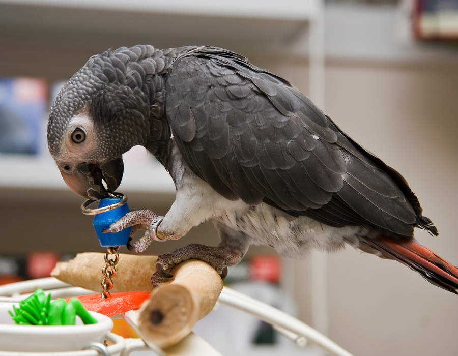
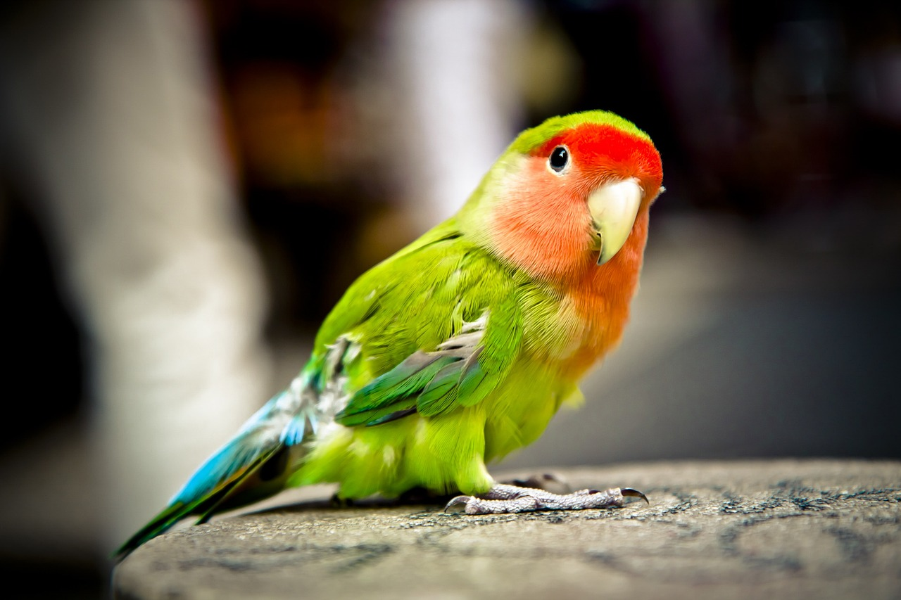

Curiosidades de los Loros
1. Habilidades Cognitivas
Los loros son considerados unas de las aves más inteligentes. Pueden resolver problemas, aprender palabras y realizar tareas complejas.
- Alex, el loro gris africano: Fue estudiado por más de 30 años y mostró habilidades de conteo y reconocimiento de colores.
- En pruebas de memoria, los loros superan a muchos otros animales, incluidos primates.
2. Colores Vibrantes
Sus plumajes no solo son hermosos, sino que tienen funciones biológicas importantes. Los colores brillantes atraen parejas y ayudan a identificarse dentro de la bandada.
- El verde y azul son los colores más comunes en la mayoría de las especies.
- Algunas especies, como las cacatúas, poseen crestas que levantan para comunicarse.
3. Longevidad
Los loros tienen una esperanza de vida sorprendentemente larga, lo que los convierte en compañeros de vida para quienes los tienen como mascotas.
- Algunas especies como los guacamayos pueden vivir hasta 80 años.
- En la naturaleza, su longevidad depende de la ausencia de depredadores y de un hábitat seguro.

